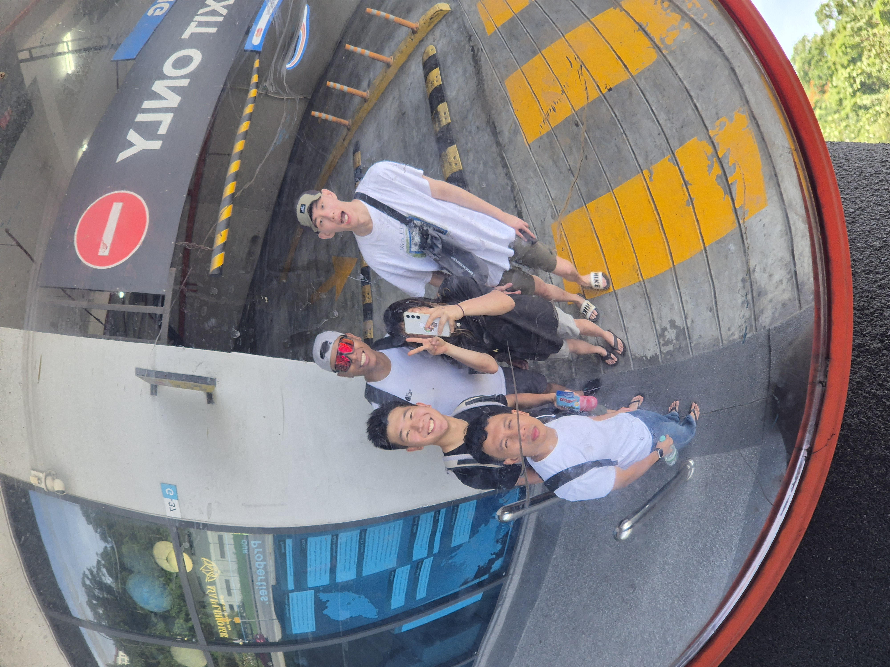
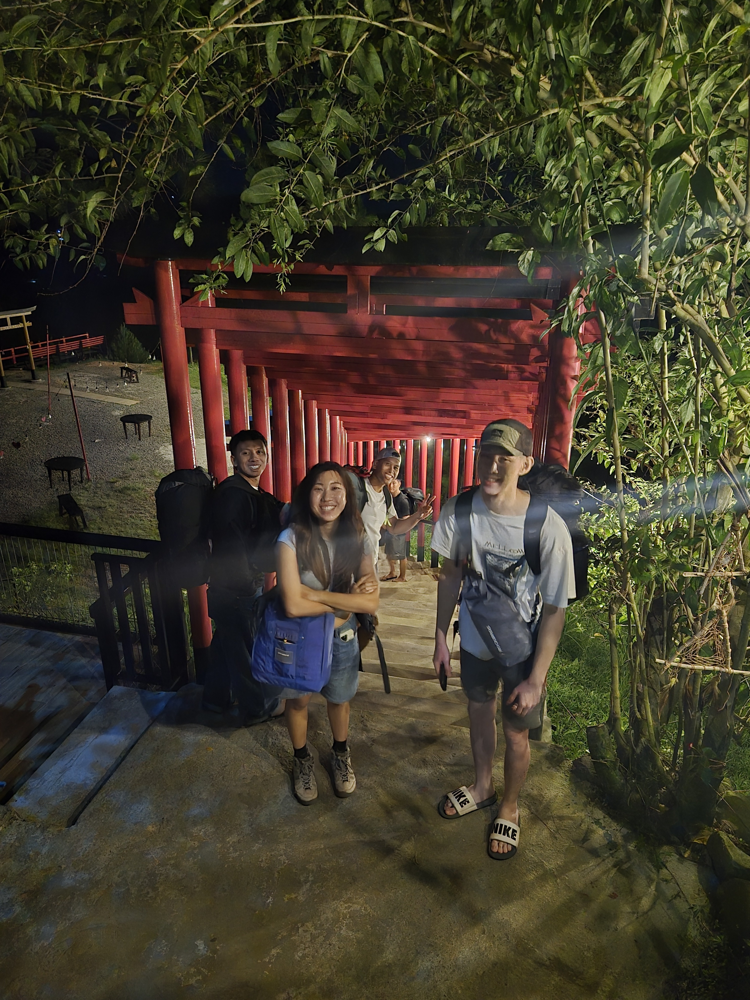
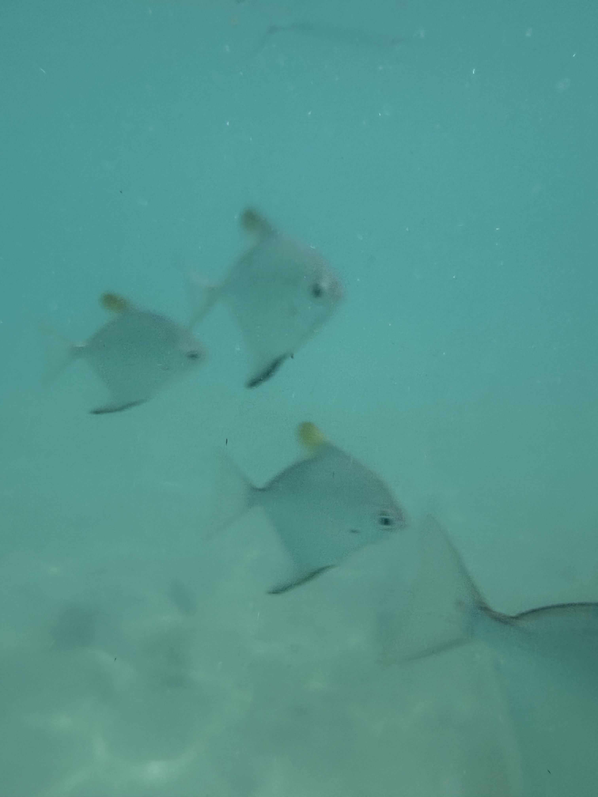
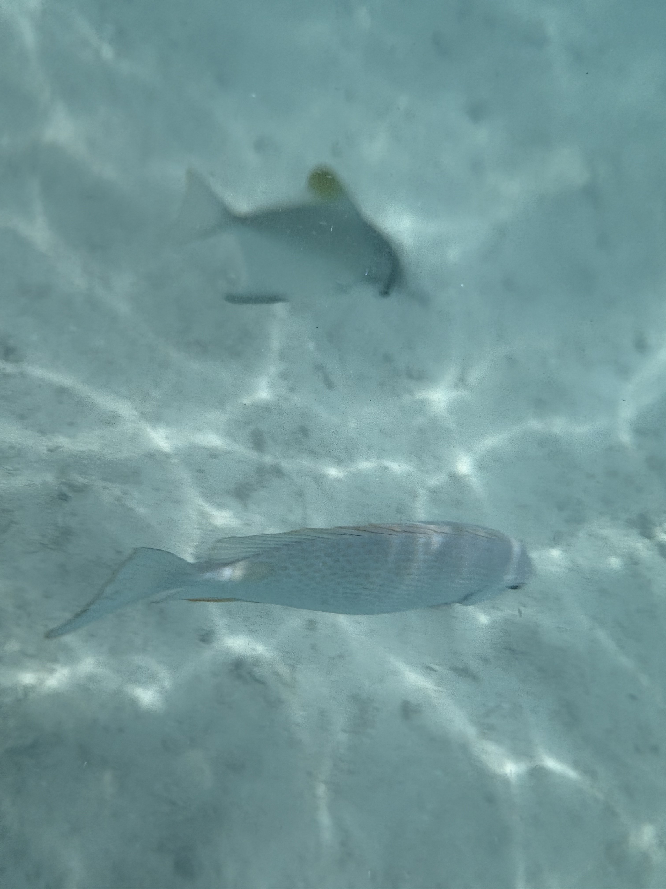

Kota Kinabalu
Arrival
The South China Sea glittered from the taxi window. Kota Kinabalu, seen from the air, is a city that knows exactly where it stands — a Malaysian port town pressed between open water and a solid green wall of mountain. Jetlagged and overheating, we dropped our bags, found cold Milo, and walked to the nearest waterfront. The next morning we were on a boat to Sapi Island, masks fogging, following sea turtles through water too blue to be trusted. For one whole day, we let the mountain wait.




